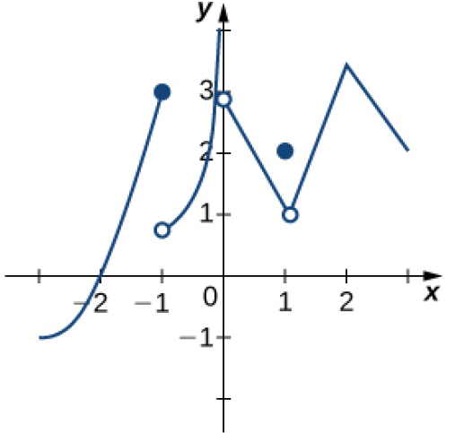
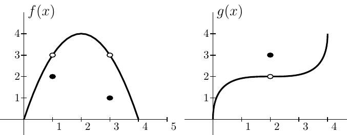

State the definition of continuity at a point using limits,
i.e. complete the definition "A function f(x) is continuous at point a if and only if ..."
What does your definition mean graphically?
A drippy faucet adds one milliliter to the volume of water in a tub at precisely one second intervals.
Let f be the function that represents the volume of water in the tub at time t. Which of the following statements is correct?
(a) f is a continuous function at every time t
(b) f is continuous for all t other than the precise instants when the water drips into
the tub.
(c) f is not continuous at any time t.
(d) There is not enough information to know where f is continuous.
A drippy faucet adds one milliliter to the volume of water in a tub at precisely one
second intervals. Let g be the function that represents the volume of water in the
tub as a function of the depth of the water, x, in the tub. Which of the following
statements is correct?
(a) g is a continuous function at every depth x.
(b) there are some values of x at which g is not continuous.
(c) g is not continuous at any depth, x.
(d) not enough information is given to know where g is continuous
Example
Consider the graph of the function below.

Find all values for which the function is
discontinuous.
For each value in part a., state why the formal
definition of continuity does not apply.
Classify each discontinuity as either jump,
removable, or infinite.
Example
Find the places, if any, where the following functions are discontinuous. Graph each function.
\(\displaystyle f(x) = \frac{x}{x^2 - x}\)
\(\displaystyle g(x) = \frac{|x-2|}{x-2}\)
\(\displaystyle h(x) = x^{-1} + 1\)
Example
Find the values of \(k\) that makes each of the following functions continuous.
\(\displaystyle f(x) = \begin{cases} 3x+2, & x< k \\ 2x-3, & x \geq k\end{cases} \)
True/False
True or False: At some time since you were born your weight in pounds equaled your
height in inches.
True or False. At some time since you were born, you were exactly three feet tall.
Suppose that during half-time at a basketball game the score of the home team was
36 points. True or False: There had to be at least one moment in the first half when
the home team had exactly 25 points.
Theorem
Theorem: The Intermediate Value Theorem. Let \(f\) be continuous over a closed, bounded interval \([a,b]\).
If \(z\) is any real number between \(f (a)\) and \(f (b)\), then there
is a number \( c \in [a,b]\) satisfying \(f (c) = z\).
Use the statement “The cosine of t is equal to t
cubed.”
Write a mathematical equation of the statement.
Prove that the equation in part a. has at least one
real solution.
Example -

Theorem. If \(f(x)\) is continuous at \(L\) and \(\displaystyle \lim_{x \to a} g(x) = L\), then \(\displaystyle \lim_{x \to a}f(g(x)) = f\left( \lim_{x \to a} g(x) \right) = f(L)\).
True or False. \(\displaystyle \lim_{x \to 2} f(g(x))\) exists.
How does this theorem fit in with \(\displaystyle \lim_{x \to 0} \sin \left( \frac{1}{x} \right)\) DNE?
What is \(\displaystyle \lim_{x \to 0} e^{\frac{\sin(3x)}{3x}}\)?
Example - logic
You know the following statement is true:
"If f(x) is a polynomial, then f(x) is continuous."
Which of the following is also true?
If f(x) is not continuous, then it is not a polynomial.
If f(x) is continuous, then it is a polynomial.
If f(x) is not a polynomial, then it is not continuous.
Example
(from UW Stout math professor Dr. Benson)
Determine whether the function \(g(x)\) is continuous on \((-\infty,\infty)\).
If it is not continuous, classify all discontinuities.
\(g(x) = \begin{cases} x^2, & x<1\\ \ln(x) + 1, & 1\le x < e \\ x, & x>e\end{cases}\)